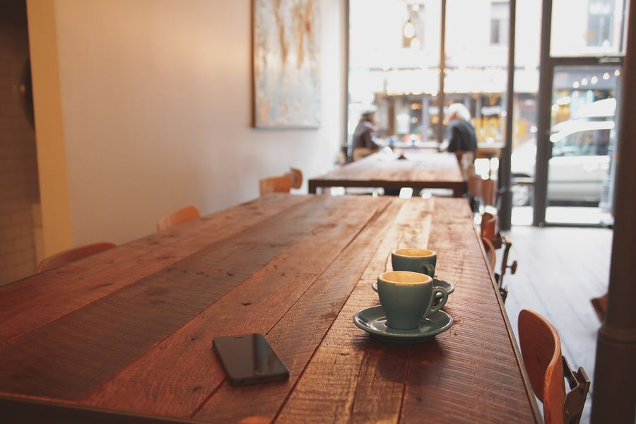
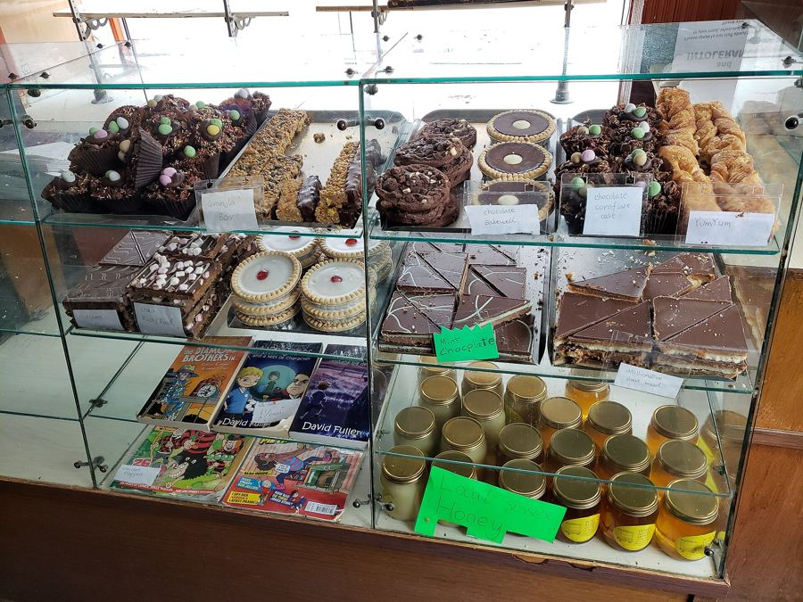
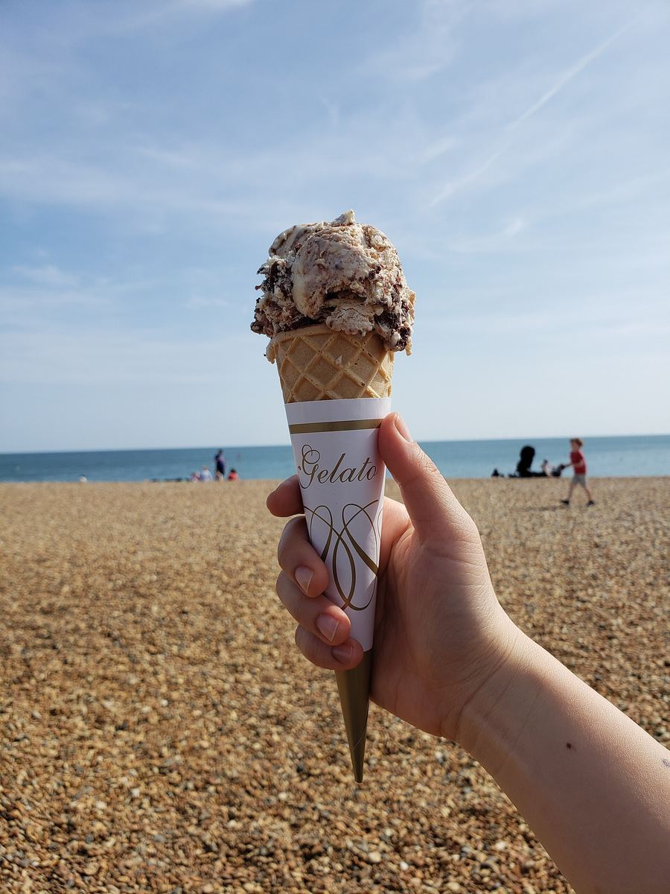
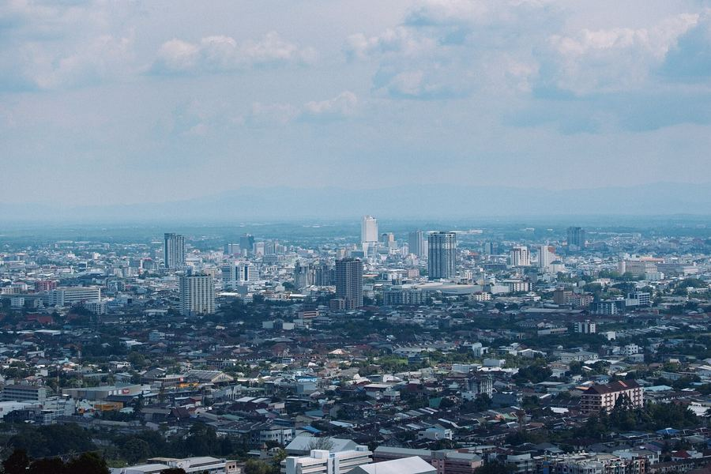
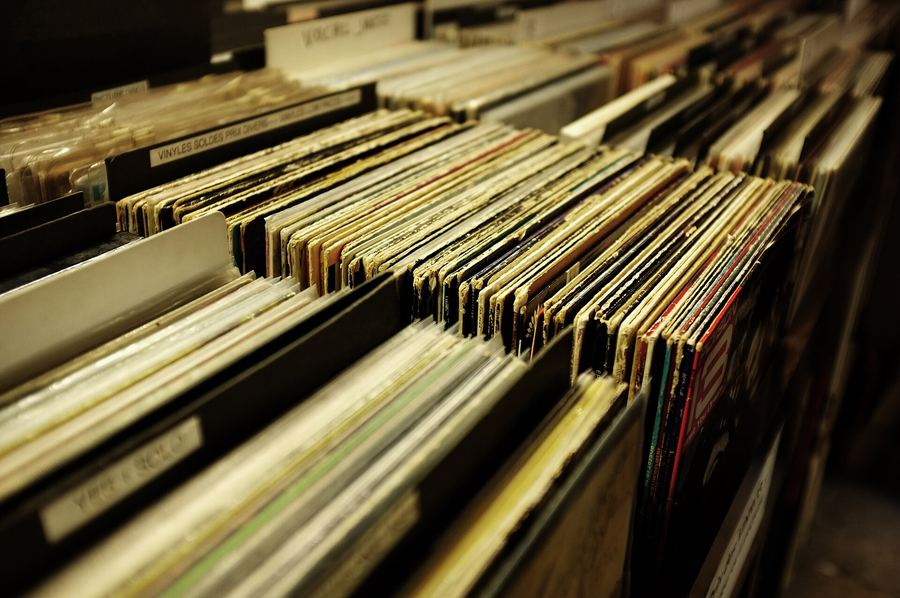
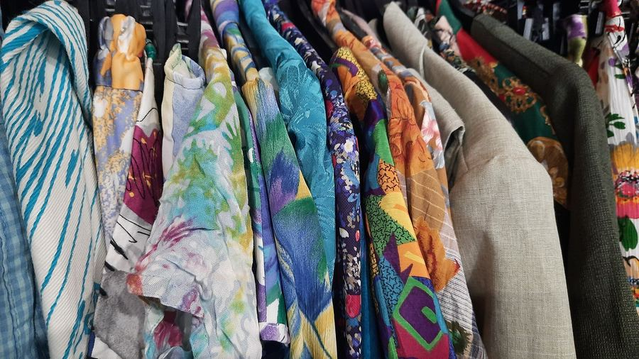
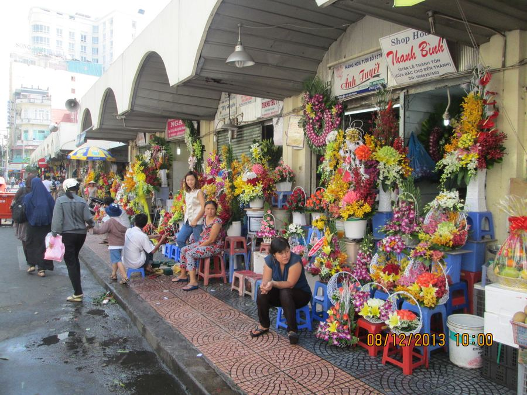

Local coffee roasters
Must have · Roasts its own beansNice to have · Not a chain
Example
A café that roasts its own beans is a 6-minute walk away.
Example watches
Start from a ready-made watch or build your own. Nearly taps you when a match is close.

A café that roasts its own beans is a 6-minute walk away.

A bakery that bakes its own sourdough is 4 min away. Open until 3.
A park with a playground is a 5-minute walk away.

An ice cream shop that makes its own is 5 min away. Open until 10.

A quiet lookout is 8 min away. Good for sunset tonight.

An independent record shop is a 3-minute walk away.

A small boutique is 5 min away. Open until 7.

A farmers market is 7 min away. Open until 2.
How it works
A good bakery, a secondhand bookshop, a quiet park.
A few minutes or a proper wander. Wherever you are, near work or near home.
A short alert with the place's name and how far it is on foot.
Luck shouldn't be the only way to find those places. Nearly is the local friend who won't let you miss the best spots.
A place alerts once, and again only when something changes.
Nothing from 10 PM to 8 AM unless you change it.
Your exact location stays on your iPhone.